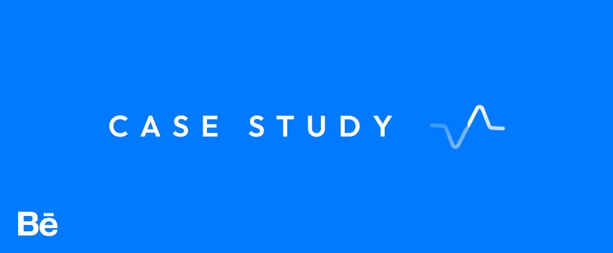
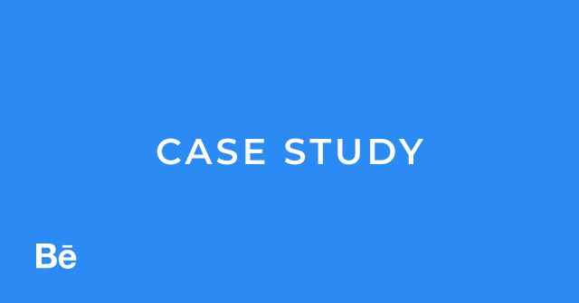
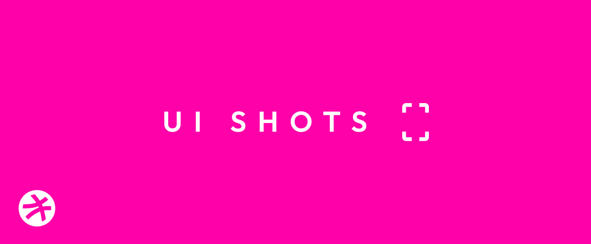

Hello 👋🏽
I'm
I'm
Being real and ethical is part of my conscious routine and I choose to work with people who
share same value!
Download Resume
I'm a passionate UI/UX designer focused on creating engaging digital experiences. With a blend of aesthetics and functionality, I craft intuitive interfaces that leave a lasting impact. Let's collaborate on projects that challenge the status quo and push the boundaries of design.
Skills
Throughout my journey as a UI/UX designer , I have developed and refined my skills in :
UX / Research
Conducted thorough research using qualitative and quantitative methods to gather insights into user behaviors, preferences, and needs. Utilized techniques such as user interviews, usability testing, and analytics analysis to inform design decisions.
Wireframing
Proficient in creating wireframes, which are low-fidelity visual representations of website or application interfaces. Wireframes serve as blueprints that outline the layout, structure, and content hierarchy, focusing on the user flow and functionality.
Prototyping
Proficient in creating interactive prototypes that simulate user interactions and workflows within a digital interface. This allows stakeholders to experience the design firsthand and provide feedback on usability and functionality.
Usability Testing
Skilled in planning and designing usability testing sessions tailored to specific goals and target users. This includes defining test objectives, creating test scenarios, and identifying appropriate metrics for evaluation.
Explore my
best projects


View Case Study
I had the privilege of crafting a seamless and delightful user experience , where I employed my expertise as a UX designer to optimize every aspect of the digital journey.

View UI Shots
As a passionate UX designer, I believe in honing my skills and staying creatively inspired. The Daily UI Challenge provided the perfect platform for me to embark on a design journey that pushed my boundaries and fueled my creativity.